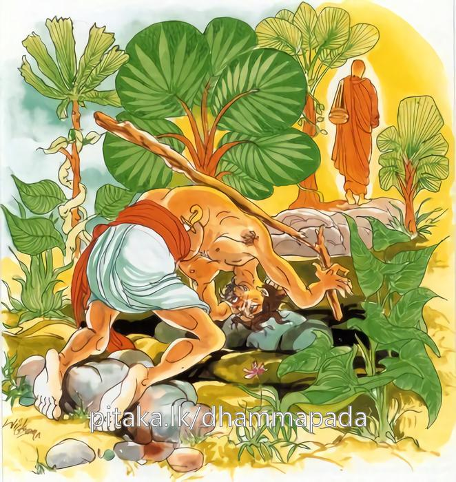
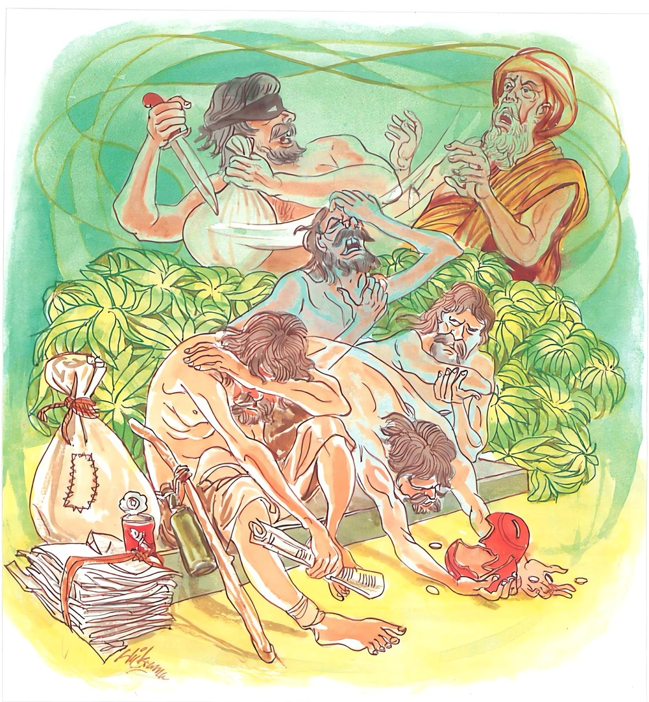
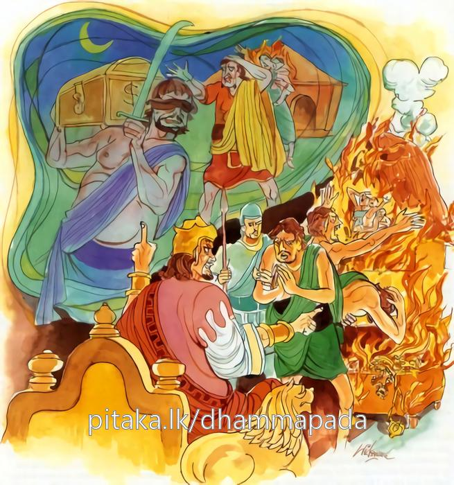
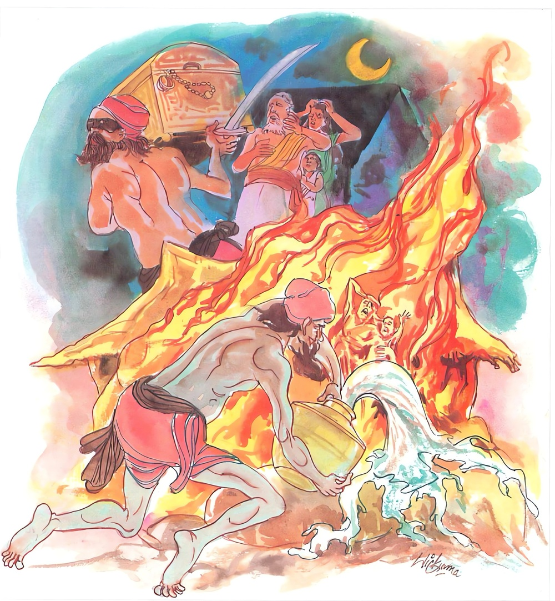

10-7 මහමුගලන් තෙරුන්ගේ කථා පුවත.
මෙම කතාව සද්ධර්ම සාගරයෙන් ද කියවන්න.
යො දණ්ඩෙන අදණ්ඩෙසු අප්පදුට්ඨෙසු දුස්සති
දසන්නමඤ්ඤතරං ඨානං ඛිප්පමෙව නිගච්ඡති.
කායදණ්ඩ වාග්දණ්ඩ ධනදණ්ඩ රහිත වූ, (තමහට වත් අන් හට වත්) අද්රෝහී වූ, එ හෙයින් ම සියලු සතුන් කෙරෙහි මෛත්රීපර වූ ක්ෂිණාස්රවයන් විෂයයෙහි යම් පුද්ගලයෙක් තෙම කායදණ්ඩාදි දණ්ඩයෙන් අපරාධ කෙරේ ද, හෙ තෙම දශවිධ දුඃඛකාරණයන් අතුරෙන් එක්තරා දුඃඛකාරණයකට වහා ම පැමිණෙන්නේ ය. හේ කවර යත්:

වෙදනං ඵරුසං ජානිං සරීරස්ස ච භෙදනං
ගරුකං වාපි ආබාධං චිත්තක්ඛෙපං ව පාපුණෙ.
කර්කශ වූ, (අත් පා බිඳීම් ආදියෙන්හෝ චක්ඛුරෝග සොතරොගාදියෙන් හෝ උපන් බලවත් ශරීර) වේදනාවකට හෝ, (මහ නැව් නැසීම් නිධාන අපවත් වීම් ආදි වූ මහත් අර්ත්ථ) හානියකට හෝ (අත් පා කැපීම් බිඳීම් හිස පැළීම් ආදී වූ) ශරීරභේදයකට හෝ නැවත (කාශ ශ්වාස අතීසාර සොඵොදර කුෂ්ඨ ගණ්ඩ කිලාසශොෂාදි) බලවත් රෝග දුකකට හෝ (කාණ කුණි ඛංජ පිඨසප්පී ආදි බවට හෝ), යක්ෂෝන්මාදයට පිත්තොන්මාදයට හෝ පැමිණෙන්නේ ය.

රාජතො වා උපස්සග්ගං අබ්භක්ඛානං ව දාරුණං
පරික්ඛයං ව ඤාතීනං භොගානං ව පභඞ්ගුරං.
රජුන් කෙරෙන් වන (තනතුරු උදුරා ගැන්මෙන්, දන වොලො ගැන්මෙන්) උපද්රවයකට හෝ දරුණු වූ (අසෝ තැන උමං බුන්නේ, මං පහළුයේ, මිනී මැරුයේ, අසෝ රාජාපරාධය කෙළේ තෝ වෙහි දැ යි නො ඇසූ නොකී නොබිණූ නොකළ දෑ පිළිබඳ) බලවත් අභ්යාඛ්යානයකට හෝ (තමාගේ සුව දුක බැඳී පිහිටි වන්නට නිසි වැඩී සිටි) නෑයන්ගේ විනාශයට හෝ (රත්රන් අඟුරු වීම ය, මුතු කපුඇට වීම ය, කහවණු කැටකැබිලිති වීම ය යන ආදී වු) භෝගවිනාශයකට හෝ පැමිණෙන්නේ ය.

අථ වාස්ස අගාරානි අග්ගි ඩහති පාවකො
කායස්ස භෙදා දුප්පඤ්ඤො නිරයං සො උපපජ්ජති.
නො හොත් ඒ පාපී පුද්ගලයාගේ වාසාගාරයන් ගිනි තෙමේ දවන්නේ ය. (අනිත් දවන කෙනෙක් නැත් නම් සේන ගිනි හෝ ලැවු ගිනි හෝ දවන්නේ ය.) ඒ අඥාන පුද්ගල තෙම ජීවිතේන්ද්රියෝපච්ඡේදයෙන් මත්තෙහි (ඒකාන්තයෙන්) නිරයට ද පැමිණෙන්නේ ය.

“යෝ දණ්ඩෙන” යන මෙම ධර්මදේශනය ශාස්තෲන් වහන්සේ රජගහ නුවර වේළුවනාරාමයේ වැඩ සිටියදී මහමුගලන් තෙරුන් නිසා දේශනා කළහ.
එක් සමයෙක තීර්ථකයින් එක්රැස් වී රහස් සාකච්ඡාවක් කළහ. යහළුවනි ! කුමන කරුණක් නිසා භවත් ගෞතමයන්ට මහත් ලාභසත්කාර ලැබේදැයි දනිම්ද? අපි නොදනිමු. තෙපි දනිව් ද? එසේය. මම දනිමි. මුගලන් නම් වූ එක් අයෙක් නිසා ලැබේ. ඔහු දෙව්ලොව ගොස් දෙවියන් ගෙන් ඔවුන් කළ කුශල කර්ම විමසා දැනගෙන අවුත් මිනිසුන්ට කියාදෙයි. මේ තැනැත්තා මෙබඳු කුශල කර්මයක් කොට මෙබඳු සම්පත් ලබා තිබේ යනුවෙන් විස්තර කර දෙයි.
මිනිස්සු ඔහුගේ මේ කථා අසා මහත් ලාභසත්කාර පවරා දෙති. මේ නිසා ඔහු මරන්නේනම් අපට එම ලාභසත්කාර ලබාගත හැකිය. ඔවුහු එක් උපායක් ඇතැයි සියල්ලෝ ඒකච්ඡන්දයෙන් අනුමත කොට කිසියම් දෙයක් කොට ඔහු මරවුයයි. තම අනුගාමිකයන් එකඟ කරවාගෙන කහවණු දහසක් ගෙන - මිනිසුන් මරණ සොරුන් කැඳවා මහමුගලන් තෙරුන් කළුගල් කඩ වසතියි කියා ඔහු ඝාතනය කරන්නැයි ඔවුන්ට කහවණු දුන්හ. සොරු ධන ආශාවෙන් පිළිගෙන තෙරුන් වහන්සේ මරන්නෙමුයි උන්වහන්සේ වසන ස්ථානය වටකොට සිටියහ. තෙරුන් වහන්සේ ඔවුන් වටකොට ඇතිබව දැන යතුරු සිදුරෙන් නික්මී ගියහ. ඔවුන් මුගලන් තෙරුන් නොදැක නැවත දිනයක පැමිණ වට කළහ. තෙරුන් වහන්සේ මෙය දැන කැණිමඩල හිඳගෙන අහසට පැන නැග්ගේය. මේ අයුරින් පළමු මාසයේ ද තෙරුන් ගන්නට නොහැකි වූහ. අන්තිම මාසය එළඹීවිට තෙරුන්වහන්සේ තමන් විසින් කරන ලද කර්මය ඉදිරියට අදින බව දැන නොගියේය. සොරුන් ගොස් තෙරුන් ගෙන සහල් ඇට තරමට ඇට කමින් සිරුර බිදුහ.
ඊට පසු මැරුනේ යයි යන හැඟීම ඇතිව එක් වන ලැහැබක දමා ගියහ. තෙරුන් බුදුන් දැක පිරිනිවන් පාමියි ආත්ම භාවය ධ්යාන වෙළුමෙන් වෙළා ස්ථීර කොට අහසින් බුදුන් වෙත ගොස් බුඳුන් වැඳ ස්වාමීනි. පිරිණිවන් පාමියි පැවසූහ. මොග්ගල්ලාන ඔබ පිරිනිවන් පාන්නේද? ස්වාමීනි එසේය. කොතැනට ගොස් පිරිනිවන් පාන්නේද? කළුගල් පෙදෙසට ගොස් පිරිනිවන් පාමී. එසේ නම් මුගලන් මට ධර්මය කියව ! මෙබඳු ශ්රාවකයෙකුගේ දර්ශනය මින්මතු හැකිවේදැයි පවසා එනිසා ධර්මය දේශනා කරන්නැයි පැවසූවිට ස්වාමීනි මම එසේ කරමියි කියා බුදුන් වැඳ අහසට පැනනැගී පිරිනිවන් පාන දින සැරියුත් තෙරුන් සේ නොයෙක් ඍධි ප්රාතිහාර්යයන් දක්වා ධර්මය කියා බුදුන් වැඳ කාළසිලා පර්වතයට ගොස් පිරිනිවන් පෑහ. සොරුන් විසින් - තෙරුන් මරන ලදැයි යන කථාව මුළු දඹදිව පැතිරුනේය. අජාසත් රජ සොරුන් සෙවීම සඳහා චරපුරුෂයන් යෙදවීය. එම සොරුන් සොර සුරා සැළකින් රා බින අතර එකෙක් එකෙකුගේ සුරාබදුනට ගසා බිමහෙළීය ඔහු අනෙකාට තර්ජනය කර එම්බා - වනචරය නුඹ කුමක් නිසා මගේ ඔඩම බිම හෙලුවේද කීම දෘෂ්ට චෞරය නුඹ පළමුවෙන්ම මහමුගලන් තෙරුන්ට තැලුවා නේද?
ඇයි මම පළමුව තැලුව බව නුඹ නොදන්නේද? මෙලෙස මමත් තැලුව මමත් තැලුව යයි කියන්නන්ගේ වදන් අසා ඒ චරපුරුෂයෝ ඒ සියළු සොරු අලාගෙන රජුට දැන්වීය. රජු සොරුන් කැදවා තෙපි විසින් තෙරුන් ඝාතනය කරන ලද්දේදැයි විමසීය. දේවයන් වහන්ස එසේය. තොප ඒ සඳහා යොදවන ලද්දේ කවරෙකු විසින්ද දේවයන් වහන්ස නිඝණ්ඨයින් විසින් යයි පැවසූහ. රජ පන්සියයක් නිඝණ්ඨයින් හා පන්සියයක් සොරුන් ද ගෙන රජගෙයි මළුවේ නැබ පමණට යටකොට පිදුරුවලින් වසා ගිනි ඇවිල විය. ඊටපසු ඔවුන් දැවුන බව දැන යකඩ නගුලෙන් කඩින් කඩ සාවවා සියල්ලන් කැබලි කැබලිවලට පත් කළේය. භික්ෂූහු දම්සභා මණ්ඩපයේදී මහමුගලන් තෙරුන්ට නුසුදුසු වූ මරණයක් සිදුවීයයි කථාවක් ඉපිද වූහ.
තථාගතයන් වහන්සේ පැමිණ මා පැමිණීමට පෙර මහණෙනි. ඔබ කිනම් කථාවකින් යුතුව සිටියෝදැයි විමසා මේ මුගලන් මහතෙරුන් ගැනයයි පැවසුවිට මහණෙනි මුගලන් තෙරණුවෝ මේ ආත්මභාවයට නුසුදුසු වුවක් පෙර භවයකදී ඔහු විසින් කරන ලද කර්මයකට අනුරූපවම (යෝග්යවු) මරණයකට පත්වුයේ යැයි පැවසූහ. ස්වාමීනි උන්වහන්සේ විසින් කරන ලද පූර්ව කර්මය කුමක්ද? යනුවෙන් විමසුහ. එවිට විස්තර වශයෙන් පැවසුහ.
අතීතයේ බරණැසවාසී එක් කුල පුත්රයෙක් තමන් විසින්ම සහල් කෙටීම, ඉවීම් ආදිය කරමින් දෙමාපියන් පෝෂණය කළේය. මේ අතර දෙමාපියෝ දරුවා ! ඔබ තනියම ගෙයි වැඩද, කැලෑවේ වැඩද, කරමින් වෙහෙසට පත්වේ. ඔබට එක් දැරියක කැඳවාගෙන එමුයි කියා කීහ. මෑණියනි. පියාණනි මට එබඳු බිරිඳකගෙන් වැඩක් නැත, ඔබ දෙපළ ජීවත්ව සිටින තාක් සියතින්ම උවැටන් කරමි. මෙසේ ඔහු ප්රතික්ෂේප කරද්දීම නැවත නැවත ඇවිටිලි කර කුමාරිකාවක් කැඳවාගෙන ආවාහුය.
ඇය දින කීපයක් ඔවුන්ට උවැටන් කර පසුව ඔවුන් දැකීමටද අකමැති වන්නී ඔබේ දෙමාපියන් සමඟ එකතැන වාසය කිරීමට නොහැකි යයි කෑගසා ඔහු (සැමියා) තමන්ගේ කථා ගණන් නොගන්නාවිට ඔහු බැහැරක ගිය අවස්ථාවේදී නියඳ කෙදි කැබලි හා කැඳපෙන ගෙන තැන් තැන්වල දමා - ඔහු ආපසු පැමිණිවිට මේ මොනවාදැයි විමසූ අවස්ථාවේදී ඇය මේ මහළු අන්ධයෝ මේ ගෙය හැමතැන කිළිටි කරමින් සිටිති. මොවුන් හා එකට විසීම කළ නොහැකිය. මෙසේ ඇය නැවත නැවත කියන්නේ පුරණ ලද පාරමිතා ඇත්තෙක් වුවද මා පියන් කෙරේ සිත බිඳුනි. ඔහු හොඳයි කළ යුතුදේ දනිමියි. ඔවුන්ට කෑම දී මෑණියනි, පියාණෙනි, අසුවල් තැන් ඤාතීහු ඔබලාගේ පැමිණීම අපේක්ෂාවෙන් සිටිති. එහි යමුයි ඔවුන් කරත්තයකට නංවාගෙන යන්නේ කැලෑව මැදට පැමිණිවිට පියාණනි රැහැන ගන්න ගොන්නු පා සලකුණු අනුව යති. මෙතැන සොරු සිටිති මම බසිමියි. පියා අතට රැහැන් දී ගලෙන් බැස යන්නේ හඩ පරිවර්තනය කර සොරුන් පැමිණ විලාශයක් දැක්වීය.
දෙමාපියෝ ශබ්ධය අසා සොරුන් පැන්නේ යයි යන සංඥාවෙන් දරුව අපි මහළු අයයි. ඔබ රැකෙන්නැයි කීවාහුය. ඔහු දෙමාපියන් එසේ කියද්දීත් සොරුන්ගේ ඝෝෂාව කරමින් තලා පෙළා කැලෑවට දමා ආපසු ගියේය.
බුදුහු මේ ඔහුගේ පූර්ව කර්මය කියා දී මහණෙනි මුගලන් මෙබඳු කර්මයක් කොට නොයෙක් වර්ෂ ලක්ෂ ගණනාවක් නිරයේ පැසී විපාක කෙළවර ආතමභාව වශයෙන් මෙසේම තැලීම්වලට ලක්ව කුඩු කුඩු වූයේ මරණයට පත් විය. මෙසේ මුගලන් විසින් තමා කළ කර්මයට අනුරූපවූම මරණයක් ලබන ලද්දේයයි පන්සියයක් සොරුන් හා නිවටුන්ද මගේ පුතුන්ට අපරාධකර ලදහ. නිරපරාධ අයට අපරාධ කරන අයට කරුණු දසයකින් ව්යවසනය සිදුවේයයි පවසා අනුපිළිවෙළ සසඳා දහම් දෙසන්නේ මෙය දෙසුහ.
දඬුවමට නුසුදුසු ඇයට දඬුවම් දීමත්
නිවරද කෙනෙකුහට - වරදක් දැන කිරීමත්,
කළ අයට ජීවිතේ - දසවරද පැමිණේමැයි
සිරුරේ බිඳීමද - වේදනා ඇතිවීම ද
රෝදුක් වැඩීම ද - අවසාන උමතුවීමද,
රජුන්ගෙන් වන බිය - නෑයින් නැතිව යාමත්
සිය ධනය වැනසී - ලබයි නෙක් රුදු චෝදනාවන්,
නිවෙස ගිනි ගනු ඇත - තැන්පත් ධනය වැනසී
හිත මිතුරු නැති වී අපායට යයි හුදකලාවම
මෙහි අදණ්ඩෙසු යනු - කායික දඬුවම් කිසිවෙකුටත් නොදෙන රහතුන් කෙරෙහි අදහස දෙයි. අප්ප දුට්ඨෙසු - යනු තමන්ටත් අන් අයටත් අපරාධ නොකරන නොසිතන, අඤ්ඤතරං ඨානං - දුක් සහිත කරුණු දහයෙන් එක් කරුණකට වෙද නං යනු සීස රෝග ආදී දරුණු වේදනාවන්ට ගොදුරුවේ. ජාතිං යනු ධන හානිවේ. හෙදනං යනු අත්පා සිඳීම් ආදියයි. ගරුකං යනු පක්ෂපාත - ඇස් අන්ධවීම - කොරබව - කුෂ්ඨ රෝග ආදී ගරුකාබාධයන්ට ලක්වේ. චිත්තකෙඛපං - යනු උමතුබවයි. උපසග්ගං යනු කීර්තිය නැති කිරීම සේනාපති තනතුරු ආදිය භාවිතා කර ලීම රජුගෙන් උවදුරු ඇතිවීම - අබ්හක්ඛානං නොදුටු නො ඇසූ නොසිතූ දේ මේ සන්ධි සිඳීම ආදිය කළේයයි. රාජ අපරාධ තා විසින් කරන ලද්දේයයි මෙබඳු වූ දරුණු චෝදනාවන්ට ලක්වේ.
පරික්ඛයංච ඤාතීනං - යනු තමාට අත්යවශ්ය ඤාතීන්ගේ පිරිහීම සිදුවේ. පභඞ්ගුරං යනු - විනාශභාවයට නරක් වූ බවට ගෙයි තබන ධාන්ය කුණු වීමට හේතුවේ. රන් අඟරු බවට ද මුතු - කපු ඇට බවට හෝ කහවණු - හිස් කැබලි බවට දෙපා සිවුපා සතුන් අතට - ගොළු කොරබවට පත්වීමද සිදුවේ. අග්ගි ඩහති යනු එක් වසරකදී දෙතුන් වරක් අනෙක් ඒවා නොදැවෙද්දී තමන්ගේ ගෙය අකුණු සැරවලින් ගිණි ගෙය ගිනි වායුවෙන් හෝ ගිනි ගනී. නිරයං යනු මෙලොවදීම මේ කරුණු දහයෙන් එකකට හෝ පත්ව එක් ආකාරයෙන් හෝ දැක්වීමට නිරයං - සො උපපජ්ජතී යනුවෙන් දැක්වුනි. දේශනාවගේ කෙළවර බොහෝ දෙනා සෝවාන් ආදී ඵලයන්ට පත්වූහ.